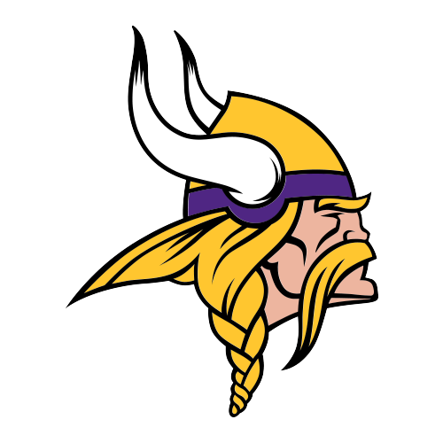
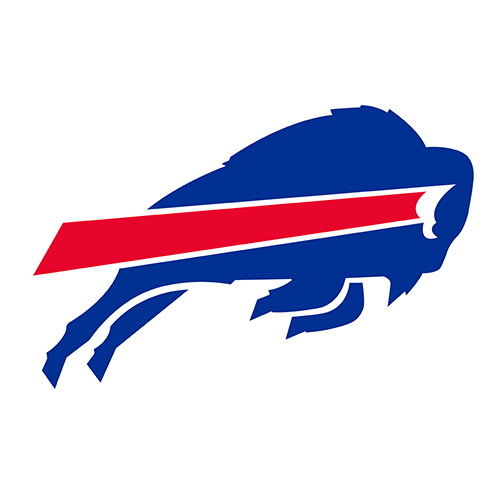

| Rank | Logo | Team | Record | Biggest Isuue On Defense | Sacks > 1 This Season |
|---|
| 1 |  | Kansas City Chiefs | 4-0 | Pass Rush Outside Of Chris Jones | |
| 2 |  | Minnesota Vikings | 4-0 | Age/Snap Counts | |
| 3 |  | Bufallo Bills | 3-1 | Maintaining the scheme with backups | |
| 4 |  | Detroit Lions | 3-1 | Limiting QB efficiency | |
| 5 |  | Tampa Bay Buccaneers | 3-1 | Consistent Pressure | |
| 6 |  | Seattle Seahawks | 3-1 | Lack of takeaways | - Derick Hall: 4
- Boye Mafe: 3
- Jarran Reed: 2
- Dre'Mont Jones: 2
- Leonard Williams: 1.5
|
| 7 |  | Baltimore Ravens | 2-2 | Giving up big passing plays | |
| 8 |  | Houston Texans | 3-1 | Safeties in coverage | |
| 9 | | San Fransisco 49ers | 2-2 | Third-down defense | |
| 10 |  | Washington Commanders | 3-1 | Run defense | |